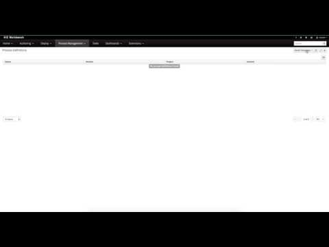
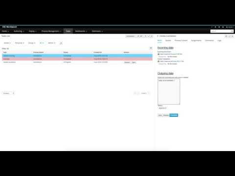

jBPM v7 – workbench and kie server integration
- one embedded in workbench
- another in in kie server
- removes duplication when it comes to execution servers – only kie server will be available – no execution in workbench
- integrates workbench with kie server(s) so its runtime views (e.g. process instances, definitions, tasks) can be used with kie server as backend
- name
- list of assigned containers (kjars)
- list of available capabilities
- start of the kie server in managed mode – which connects to controller and registers itself as remote server
- shutdown of the kie server in managed mode – which notifies controller to unregister itself from remote servers
- server management (that maintains server templates) to know what is available and where
- kie server client to interact with remote servers
- server templates whenever project is to be deployed – regardless if there are any remote servers or not – again this is just update to the definition of the server
- remote servers whenever kie server interaction is required – start process, get process instances, etc
- if there is only one server template:
- it gets selected as default
- artifact name is used as container id
- by default container is started
- if there are more than one server templates available user is presented with additional popup window to select:
- container id
- server tempalte
- if container should be started or not
- Process definition view
- process definition list
- process definition details
- Operations
- start process instance (including forms)
- visualize process definition diagram
- Process instance view
- process instance list (both predefined and custom filters)
- process instance details
- process instance variables
- process instance documents
- process instance log
- operations
- start process instance (including forms)
- signal process instance (including bulk)
- abort process instance (including bulk)
- visualize process instance progress via diagram
- Tasks instance view
- task list (both predefined and custom filters)
- task instance details (including forms)
- life cycle operations of a task (e.g. claim, start, complete)
- task assignment
- task comments
- task log
- Jobs view
- jobs list (both predefined and custom filters)
- job details
- create new job
- depending on status cancel or requeue jobs
- Dashboards view
- out of the box dashboards for processes and tasks
- asynchronous processing of authoring REST operations has been moved from jbpm executor to UberFire async service – that makes the biggest change in cluttered setup where only cluster member that accepted request will know its status
- build & deploy from project explorer is unified – regardless if the project is managed or unmanaged – there are only two options
- compile – which does only in memory project build
- build and deploy – which includes build, deploy to maven and provision to server template
- since there is no jbpm runtime embedded in workbench there is no REST or JMS interfaces for jBPM, REST interfaces for the authoring part is unchanged (create org unit, repository, compile project etc)
- jobs settings is no longer available as it does not make much sense in new (distributed) setup as the configuration of kie servers is currently done on server instance level
- ad hoc tasks are temporally removed and will be introduced as part of case management support where it actually belongs
- asset management is removed in the form it was known in v6 – the part that is kept is
- managed repository that allows single or multi module projects
- automatic branch creation – dev and release
- repository structure management where users can manage their modules and create additional branches
- project explorer still supports switch between branches as it used to
- asset management won’t have support for asset promotion, build of projects or release of projects
- send task reminders – it was sort of hidden feature and more of admin so it’s going to be added as part of admin interface for workbench/kie server
- Case 1 – from zero to full speed execution
- Create new repository and project
- Create data object
- Create process definition with user task and forms that uses created data object
- Build and deploy the project
- Start process instance(s)
- Work on tasks
- Visualize the progress of process instance
- Monitor via dashboards

- Case 2 – from existing project to document capable processes
- Server template 1
- Deploy already build project (translations)
- Create process instance that includes document upload
- Work on tasks
- Visualize process instance details (including documents)
- Server template 2
- Deploy already build project (async-example)
- Create process instance to check weather in US based on zip code
- Work on tasks
- Visualize process instance progress – this project does not have image attached so it comes blank
- Monitor via dashboards

workbench comes with additional login module as part of kie-security.jar so to enable smooth integration when it comes to authentication, please declare in standalone.xml of your wildfly following login module:
so the default other security domain should look like this:
<security-domain name=”other” cache-type=”default”>
<authentication>
<login-module code=”Remoting” flag=”optional”>
<module-option name=”password-stacking” value=”useFirstPass”/>
</login-module>
<login-module code=”RealmDirect” flag=”required”>
<module-option name=”password-stacking” value=”useFirstPass”/>
</login-module>
<login-module code=”org.kie.security.jaas.KieLoginModule” flag=”optional”
module=“deployment.kie-wb.war”/>
</authentication>
</security-domain>
important element is marked with red as it might differ between environments as it relies on the actual file name of the kie-wb.war. Replace it to match the name of your environment.
NOTE: this is only required for kie wb and not for kie drools wb running on wildfly. Current state is that this works on Wildfly/EAP7 and Tomcat, WebSphere and WebLogic might come later…
That’s all for know, comments and ideas more than welcome

{kind=link}
{kind=link}
{kind=link}
{kind=link}
{kind=link}
{kind=link}
{kind=link}
{kind=link}
{kind=link}